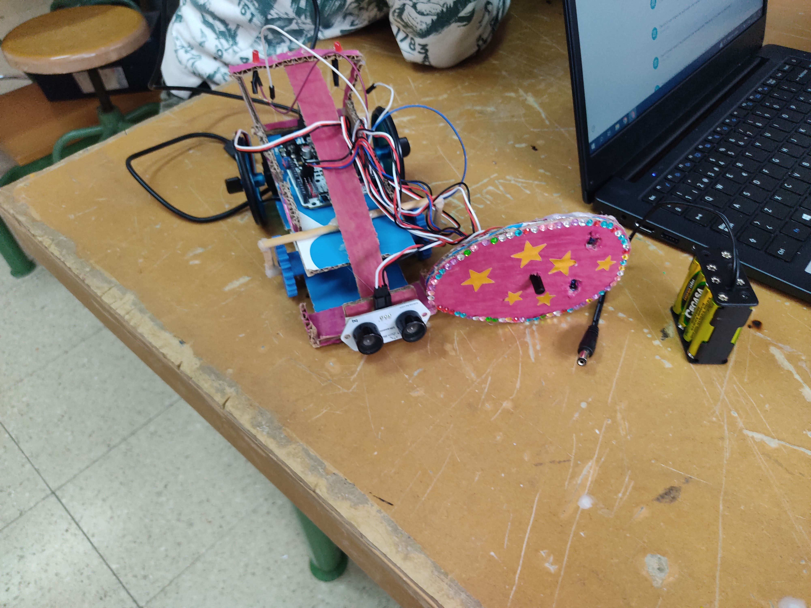
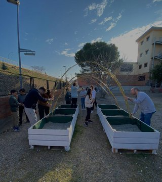
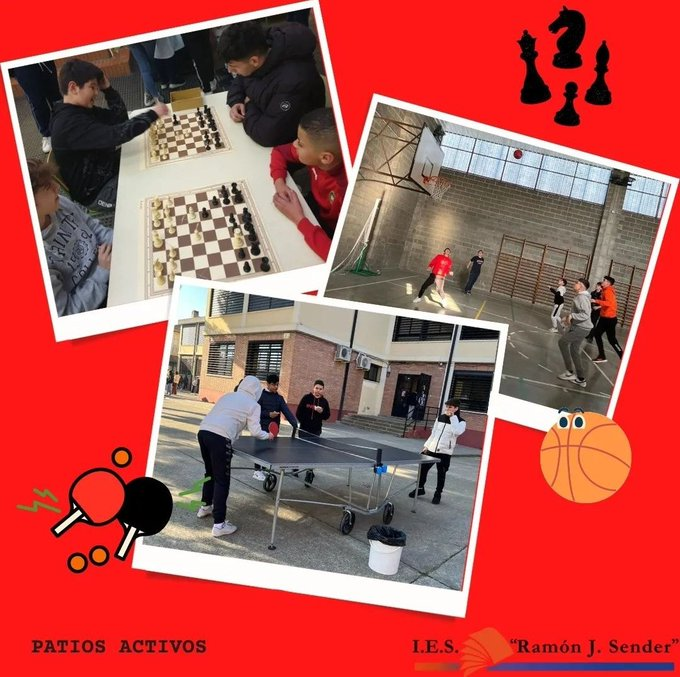

NOTICIAS

Los alumnos de Programación y Robótica de 3º ESO han creado sus propios vehículos inteligentes.

Esta es la nueva impresora en 3D que tiene el centro para el desarrollo de proyectos.

Invernadero realizado como actividad dentro del intercambio del Proyecto Erasmus+.

Han vuelto los patios activos al IES Ramón J. Sender.